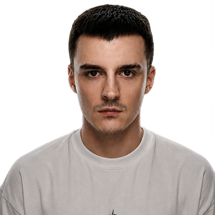

About
Манифест
Хороший дизайн не нуждается в объяснении. Он задевает сразу — ощущением чего-то нового, точного, сделанного с умом. Плохой виден так же мгновенно, даже если все правила соблюдены. Я работаю между этими двумя точками: держусь за систему там, где она помогает, и отпускаю её там, где мешает.

В дизайне с 2023 года. Начинал с веб-дизайна и фронтенда ещё в школе — это объясняет, почему мне одинаково интересно думать головой и руками.
Сейчас работаю в GIS IT-компании. За три года — проекты для правительства Лондона, Абу-Даби и Москвы, дизайн-системы с нуля, UI-киты под сложные продукты.
3+
Лет в профессии
3
Страны
∞
Итераций